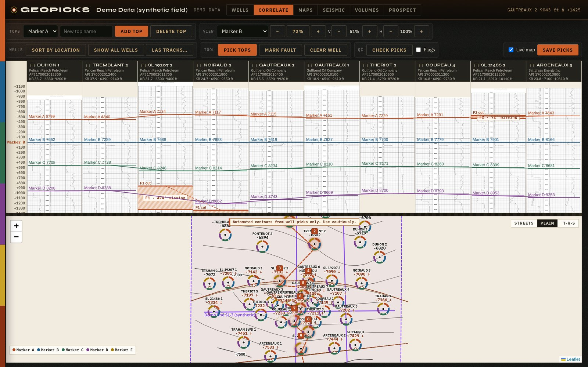
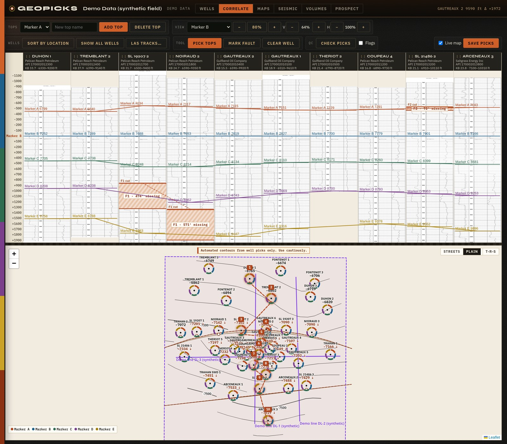
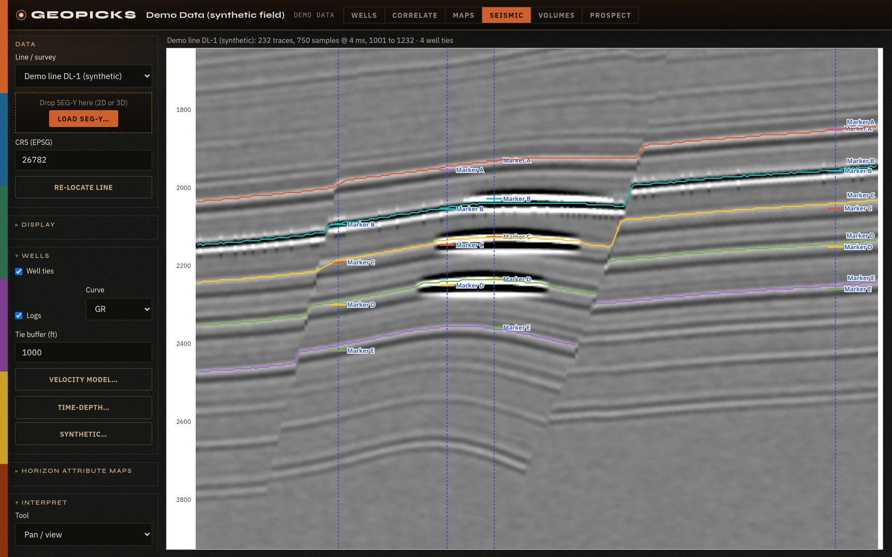
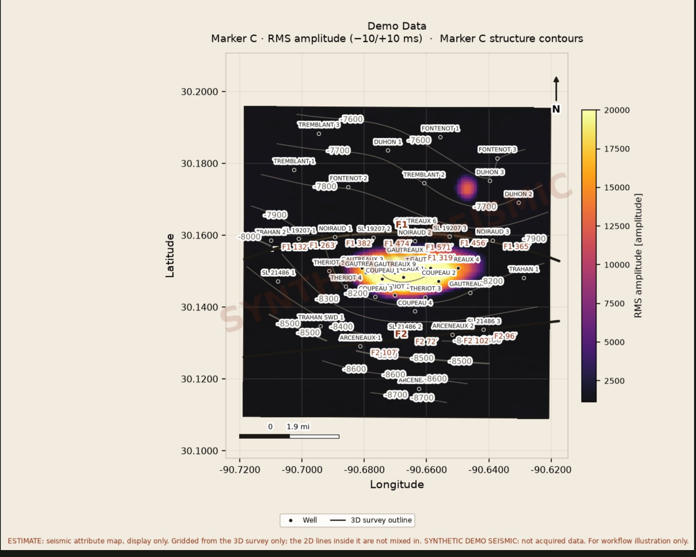
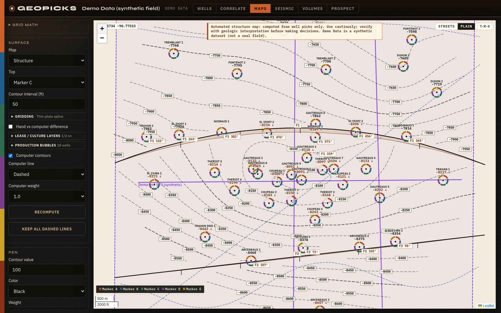
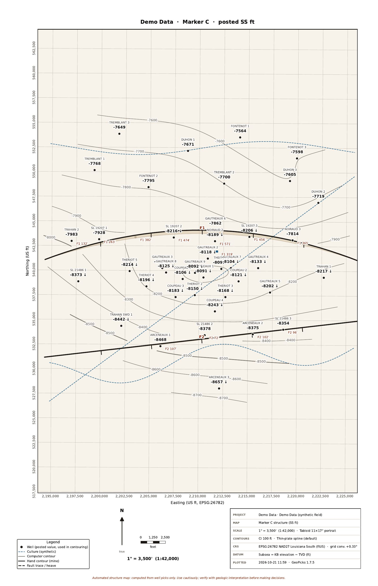
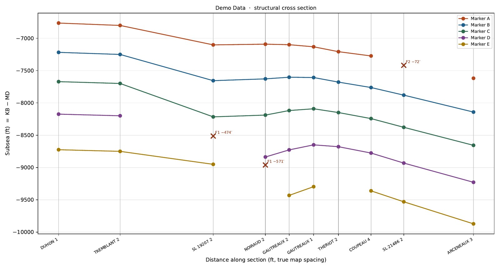

Well control and seismic
GeoPicks is a native Mac and Windows app for subsurface mapping. Pick tops on scanned well logs, correlate across sections, tie your wells to 2D and 3D seismic, and build structure maps, isopachs, volumetrics and seismic attribute maps from both well control and seismic horizons. Affordable for independents and consultants, with no LAS files required and no cloud upload.
Get free beta access
Pick directly on scanned PDF well logs. There's no digitizing and no LAS files needed before you can map. Depth calibration corrects tilted and unevenly stretched scans and ignores misread depth labels.
Hang wells on a datum, pick tops across cross sections, and catch bad picks with QC checks. Edit KBs in one table or import a CSV. Wells with no KB are flagged and left out of contouring until you add one.
Load 2D lines and 3D SEG-Y volumes. View inlines, crosslines, time slices, and arbitrary lines through your wells, with envelope, phase, frequency, cosine of phase and sweetness attributes.
See your well tops posted on the seismic at their two-way times. Enter a checkshot, or build a synthetic seismogram from sonic and density logs. Horizons are corrected to your tops with a mis-tie table, and a layered velocity model fitted to your ties gives depths labeled as estimates.
Pick and auto-track horizons on 2D and 3D seismic. They're depth-converted and used alongside your well picks as structure-map control.
Structure and isopach contours from your picks, labeled as automated so you treat them as a starting point. Grid with thin-plate spline, minimum curvature, kriging or IDW, or draw your own contours and the grid honors them. Add horizon amplitude, dip and azimuth, production bubble, and lease and culture layers.
Find the closure and spill point on your structure map, honor sealing faults, or set your own contact. GRV, OOIP/OGIP and recoverable, always labeled as estimates from your inputs.
Plot to scale on letter up to 24x36 with a title block and State Plane grid. ZMap grids, shapefiles, PNG and CSV, a PowerPoint deck, and a PDF prospect pack.
A native app on your own Mac or Windows PC that updates itself. Your logs, seismic, picks and maps never leave your machine. GeoPicks only sends an anonymous version check, which you can turn off in Settings. Besides that and the update download, only the optional street basemap, USGS elevation lookup and township/range grid use the network (privacy). The Demo Data project, a synthetic field with 42 wells, picked tops, fault cuts, 2D and 3D seismic, production and leases, opens on first launch.
Real GeoPicks captures of the synthetic Demo Data field that ships with the app. Every well, log, seismic line, lease and number in it is made up and generated from one earth model; it is not a real field.






Computer-gridded maps, volumes and depth conversions are a starting point. GeoPicks labels them as automated estimates; check them against your own geologic interpretation before making decisions.
Since finishing my PhD at Tulane, I've wanted to prospect independently, but traditional subsurface mapping software costs thousands of dollars a year in licensing. So I built GeoPicks for geologists, independents, and consultants who map from well logs and seismic. It reads data from SONRIS, the Texas RRC, IHS/Enverus, Petra and Kingdom exports. It also loads 2D and 3D SEG-Y, ties your wells to the seismic, and lets you pick horizons that feed your structure maps.
J. Kevin Reece, PhD
Beta testers get 3 months free, plus 3 more after a short feedback form (6 months total). It runs on Mac and Windows. Each beta key works on one computer.
Download GeoPicks for your computer:
The beta isn't code-signed yet, which is why you'll see those warnings. Full install notes are on the download page.
You only install once. From 1.6.3 on, GeoPicks offers new versions itself: click Update now in the app. On a Mac, keep GeoPicks in your Applications folder so it can update in place.
GeoPicks needs a license key to run. I sign each key myself, and each beta key works on one computer. To get yours:
GPM-XXXX-XXXX-XXXX).You already sent a Machine ID (), so your free 3-month beta key will be issued for that computer and will come by email from me within 1 business day. If you install on a different computer, send me that computer's Machine ID instead.
Your free 3-month beta key will come by email from me within 1 business day of getting your Machine ID.
Questions or feedback: geopicks.software@gmail.com